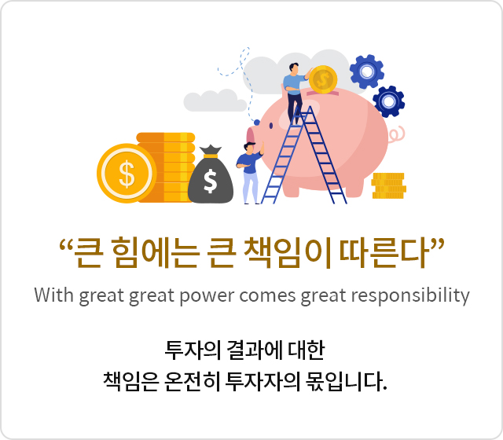

펀드의 특징
펀드 투자
펀드 투자의 가장 큰 매력은 전문가가 알아서 해준다는 점입니다. 투자자는 그저 좋은 펀드만 엄선해서 자금을 맡기면 나머지는 전문가가 최선을 다해 주식과 채권을 골라 투자하고 그 수익을 투자자에게 돌려줍니다.

“달걀을 한 바구니에 담지 말라＂
- 펀드는 여러종목에 분산투자하도록 규정 (한 종목당 최소 10%이내로 투자)
- 분산투자 투자 포트폴리오구성 및 주식이나 채권을 구성할 때 여러 종목에 분산투자함으로서 하곳에 투자시 생길 수 있는 위험을 분산하는 효과가 있음
'달걀을 한 바구니에 담지 말라’는 말을 들어보신 적이 있나요? 투자 역시 한 곳에 투자하지 말고 여러 군데로 나눠서 투자해야 위험을 줄 일 수 있습니다. 이런 점에서 펀드는 기본적으로 여러 종목에 나눠서 투자하는 상품입니다. 최소한 한 종목에 10%이상 투자할 수 없도록 규정돼 있습니다. 따라서 최소 10개 종목 이상에 나눠 투자하고 있는 셈입니다. 이렇게 하면 한 두 종목이 손해가 나더라도 나머지 종목에서 올린 수익이 있기 때문에 전체적으로 안정적인 수익을 기대할 수 있는 것이랍니다.

“큰 힘에는 큰 책임이 따른다＂ With great great power comes great responsibility
투자의 결과에 대한 책임은 온전히 투자자의 몫입니다.이렇게 매력적인 펀드에 투자하면 그 만큼 책임도 뒤따릅니다. 다시 말해 전문가에게 맡겼다고 해서 손해가 나면 전문가가 책임져주는 것이 결코 아닙니다. 펀드는 이익이 나면 이익이 나는 만큼 투자자에게 되돌려주듯이 손해가 나면 손해가 난 만큼 투자자가 부담하는 상품입니다. 투자자가 스스로 펀드를 골라 돈을 맡긴 만큼 투자의 이익과 손해 모두 투자자의 몫입니다.